映射与函数
【映射】
设两个集合A、B，如果按某种对应法则f，对于集合A 中的任何一个元素，在集合B 中都有唯一的元素和它对应，这样的对应(包括集合A、B 及从A 到B 的对应法则)叫做从A 到B 的映射，记作f: A→B.与A 中元素a 对应的B 中元素b 叫做a 的象，记作b ＝f (a)，a∈A，b∈B；a 叫做b 的原象.
映射的两个要素: a∈A，a 的任意性，b ＝f (a) ∈B，b 的唯一性，但并不要求集合B 中每一个元素都有原象.B中的元素有原象时，也不要求原象唯一.
【满射】
如果f: A→B 是集合A 到集合B 的映射，并且集合B中每一个元素在A 中都有原象，即任意b∈B，都存在a∈A，使得b ＝f (a).那么就称此映射为从A 到B 上的映射，简称满射.
【单射】
如果f: A→B 是从A 到B 的映射，并且A 中两个不同元素a1，a2(a1≠a2) 在B 中的象f (a1) 和f (a2) 也不同(或说B 中元素有原象时，原象是唯一的)，即若b1，b2∈B，b2＝f (a1)，b2＝f (a2)，且a1≠a2，则b1≠b2.称为单射.
【一一映射】
如果从A 到B 的映射f: A→B，既是单射，又是满射，就称此映射为从A 到B 上的一一映射.即如果从A 到B 的对应法则f，同时满足以下三个条件时，构成从A 到B 上的一一映射: (1) 任意a∈A 都存在唯一的b∈B，使得f(a) ＝b；(2) 任意b1∈B，都存在a1∈A，使得f (a1)＝b1；(3) 若a1，a2∈A，且a1≠a2，一定有b1＝f (a1)，b2＝f (a2) ∈B，且b1∈b2.
【逆映射】
如果f: A→B 是从集合A 到集合B 上的一一映射，并且对于B 中每一元素b，使b 在A 中的原象a 和它对应，这样所得的映射叫做f: A→B 的逆映射，记作f －1: B→A.
应该明确，f －1: B→A 是从B 到A 上的一一映射，并且f －1[f (a)] ＝a (其中a∈A，f (a) ∈B.)，即如果b∈B，且b 是在f: A→B 的作用下a (a∈A) 的象，那么a(a∈A) 一定是b 在f －1: B→A 的作用下b (b∈B) 的象.
例如(1) 设A ＝R (实数集).B ＝R ＋ (正实数集)，法则f: y ＝x2－2，其中x∈A，y∈B.(即A 中的元素的平方减2).A，B，f 不能构成从A 到B 的映射，这是因为1∈A，但12－2 ＝－1∈B，即在法则f 的作用下，A 中元素1，在B 中不存在元素与之对应.
(2) 设A ＝R，B ＝R，法则f: y ＝x2－2，其中x∈A、y∈B，A，B，f 构成从A 到B 的映射，但不是从A 到B 上的映射，这是因为任何卖数x，x2－2 仍为确定的实数、即B 中存在唯一的元素x2－2 与A 中元素相对应.但是对于B中元素－3，则在A 中找不到任何元素使得－3 与之对应，因为A 中任何元素x 的平方x2≥0，∴x2－2≥－2，不可能等于－3，即B 中有些元素在A 中没有原象，即此映射不是满射.
(3) 若A ＝R，B ＝ [ －2，＋∞)，法则f: y ＝x2－2，x∈A，y∈B，则构成从A 到B 上的映射，f: A→B，即满射.但是对于A 中元素3 和－3，在法则f 的作用下.其象都是7，因此这个映射f: A→B 不是从A 到B 的单射，即“满而不单”.
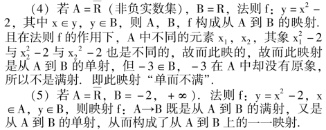
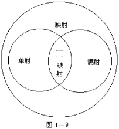
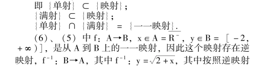
综上所述，可以得到以下关系:
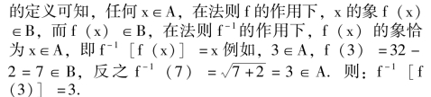
可见构成互为逆映射的两个法则，恰好构成“互为逆运算”.并且具有“还原性”，即f －1[f (x)] ＝x.
【反函数】
如果确定函数的映射f: A→B 是由A 到B 上的一一映射，那么它的逆映射f －1: B→A 确定的函数就是函数y ＝f(x) 的反函数，记作y ＝f －1(x) (其中x∈B，y∈A).可见函数的定义域和值域，恰好分别是它的反函数的值域和定义域.
(1) 不是所有的函数都有反函数，当且仅当函数y ＝f(x) 是从定义域到值域上的一一映射时，才有反函数，并且反函数是唯一的.
(2) 求一个函数的反函数的方法是由函数y ＝f (x)，解出x (用y 表示)，然后将字母x 换成y，y 换成x 即得到.
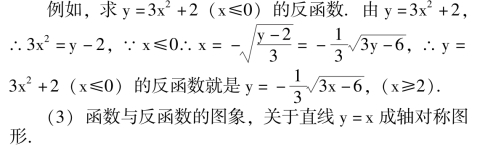
【增函数和减函数】
对于给定区间上的函数f (x)，如果对于属于这个区间的任意两个自变量的值x1，x2，当x1<x2时，都有f (x1)<f (x2)，那么就说f (x) 在这个区间上是增函数；如果对于属于这个区间的任意两个自变量的值x1，x2，当x1<x2时，都有f (x1) >f (x2)，那么就说f (x) 在这个区间上是减函数.
【单调函数】
如果函数y ＝f (x) 在某个区间(a，b) 上是增函数或减函数，就称该函数是区间(a，b) 上的(严格) 单调函数，或称该函数在此区间(a、b) 上具有(严格的) 单调性.
【函数的单调区间】
函数y ＝f (x) 在某区间上是增(或减) 函数，则称该区间为函数的单调增(或减) 区间.
(1) 函数的单调性是对某个区间而言，对于单独一点不存在单调性问题，我们研究的初等函数的图象在定义区间上是连续的(图象无间断点)，因此只要函数在该区间的端点处有定义，那么在开区间上的单调函数，在相应的闭这间上也必是单调函数.所以单调区间包括不包括区间的端点都可以.
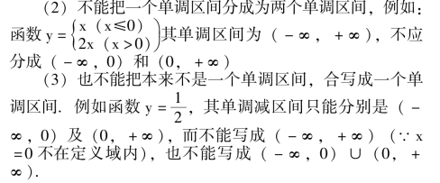
【奇函数和偶函数】
如果对于函数f (x) 的定义域内的任意一个x 值，都有f ( －x) ＝－ (x).那么就称f (x) 为奇函数.
如果对于函数f (x) 的定义域内的任意一个x 值，都有f ( －x) ＝f (x)，那么就称f (x) 为偶函数.
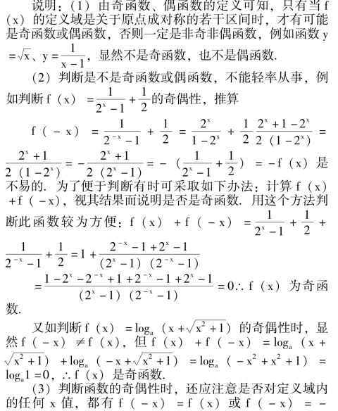
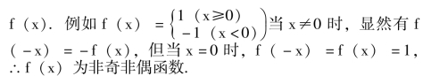
(4) 奇函数的图象特征是关于坐标原点为对称的中心对称图形；偶函数的图象特征是关于y 轴为对称轴的对称图形.
(5) 函数的单调性与奇偶性综合应用时，尤其要注意由它们的定义出发来进行论证.
例 如果函数f (x) 是奇函数，并且在(0，＋∞)上是增函数，试判断在( －∞，0) 上的增减性.
解设x1，x2∈( －∞，0)，且x1<x2<0
则有－x1> －x2>0，
∵f (x) 在(0，＋∞) 上是增函数，
∴f ( －x1) >f ( －x2)
又∵f (x) 是奇函数，∴f (x) ＝－f (x) 对任意x成立，
∴＝－f (x1) > －f (x2)
∴f (x1) <f (x2).
∴f (x) 在( －∞，0) 上也为增函数.
由此可得出结论: 一个奇函数若在(0，＋∞) 上是增函数，则在( －∞，0) 上也必是增函数，即奇函数在(0，＋∞) 上与( －∞，0) 上的奇偶性相同.
类似地可以证明，偶函数在(0，＋∞) 和( － ∞，0) 上的奇偶性恰好相反.
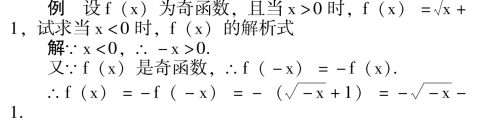
【周期函数】
对于函数f (x) 定义域内任意x 值，都存在一个非零常数T，使得f (x ＋T) ＝f (x) 恒成立，就称f (x) 为周期函数，其非零常数T 叫做该函数的周期.
说明: (1) 周期函数的定义域应该是无限的(至少在正方向或负方向上是无限的)，这一点由x，x ＋T 均属于定义域可知.
(2) 周期函数的周期必然有无穷多个，事实上，若T为函数f (x) 的周期，则nT (n∈N) 也一定是f (x) 的周期.
(3) 如果周期函数的周期中，存在一个最小的正数周期，则称此周期为最小正周期.不是所有的周期函数都有最小正周期.例如常函数f (x) ＝c (c 为常数)，任何正数都是它的周期，但却不存在最小正周期.
【函数的初等性质】
函数的定义域、值域、单调性、奇偶性以及周期性，统称函数的初等性质.
【函数的图象】
所有坐标为(x，f (x)) 的点的集合构成函数的图象:{ (x，y) ｜y ＝f (x) x∈A)}，其中A 为函数f (x) 的定义域.
描绘函数图象的一般方法为描点法；还可以利用函数的图象变换法.
【函数图象变换法】
f (x ＋c) 的图象是由f (x) 的图象沿x 轴方向平移｜c ｜个单位得到，当c >0，向左平移，c <0 时向右平移；类似地f (x) ＋m 的图象是将f (x) 的图象沿y 轴方向平移｜m ｜个单位得到，m>0 时向上平移，m<0 时向下平移.
(1) 用描点法作函数图象时，应该先就函数式讨论该函数的一些初等性质，这样便可有目的地找点，描点，从而作出比较合理的图象.
例如作函数y ＝x2－2 ｜x ｜ －3 的图象.
讨论如下:
①函数的定义域为一切实数.
②将函数变形得y ＝ ( ｜ x ｜ －1)2－4 可得函数值域为[ －2，＋∞).
③f ( －x) ＝f (x) 函数为偶函数，其图象关于y轴对称.
④讨论一些特殊点，x ＝0 时，y ＝ － 3.图象过(0，－3) 点，又当｜ x ｜ ＝3，即x ＝ ±3 时，y ＝0，即过(3，0) 和( －3，0) 点.
⑤讨论它的单调性，将函数式化简如下:
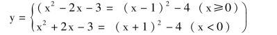
可见，当x≥0 或x <0 时，分别都是二次函数.因此它们的图象分别是抛物线的一部分，顶点分别为(1，－4) 和( －1，－4)，并且可知当x < －1 时为减函数；－1 < x <0 时为增函数；0 < x <1 时为减函数，x >1 时为增函数.
选点列表如下: (图1 －10)
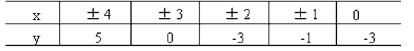
【幂函数】
函数y ＝xα(α 为常数) 叫做幂函数.
(1) 幂函数是五种基本初等函数之一.
(2) 在中学阶段只研究指数α 为有理数的情况，并表示为y ＝xn，(n∈Q).
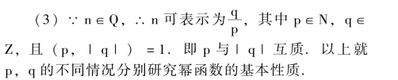
幂函数y ＝xa 具有下列性质:
①图像都过原点和点(1，1)
②函数y 在区间(0，＋) 内的值随x 值的增大而增大(单调递增)。
注: 我们把图像关于原点对称的函数称为奇函数；图像关于Y 轴以称的函数称为偶函数，图像既不关于原点对称，又不关于Y 轴对称的函数称为非奇非偶函数。
要学生注意奇偶函数图像特点介绍单调函数图像特，自左向右看上升为增函，自左向右下降为减函数举例让学生分析奇偶性和单调性。
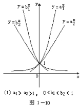
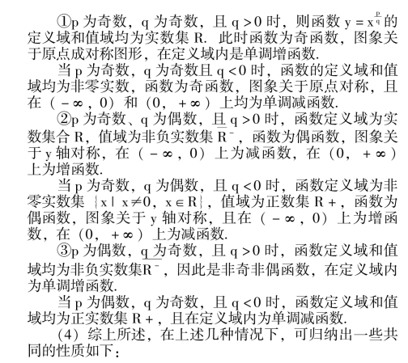
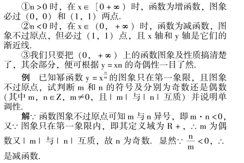
【指数函数】
函数y ＝ax(其中a>0，a≠1) 叫做指数函数.
(1) 指数函数是五种基本初等函数之一.
(2) 指数函数的基本性质如下:
①定义域为实数集R.
②值域为正实数集R ＋.
③当a>1 时，y ＝ax在定义域R 上为单调增函数，当0<a<1 时，y ＝ax在定义域R 上为单调减函数.
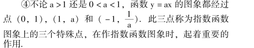
⑤x 轴是指数函数y ＝ax的渐近线.
⑥指数函数y ＝ax(a>0，a≠1) 与对数函数y ＝logax(a<0，a≠1) 互为反函数.它们的图象关于直线y ＝x 成对称图形.
⑦指数函数的图象，当a >1 时，a 越大，图象越靠近y 轴；a 越小，越远离y 轴；当0 <a <1 时，a 越大图象越远离y 轴，a 越小，越靠近y 轴.点(1，0) 为它的聚汇点及交叉点.
【对数函数】
函数y ＝logax (a>0，a≠1) 叫做对数函数.
(1) 对数函数是五种基本初等函数之一.
(2) 对数函数的基本性质如下:
①定义域为正实数集R ＋.
②值域为实数集R.
③当a>1 时，y ＝logax 是定义域R ＋上的单调增函数，当0<a<1 时，y ＝logax 在定义域R ＋上是单调减函数.
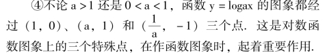
⑤y 轴是对数函数y ＝logax 的渐近线.
⑥对数函数y ＝logax (a>0，a≠1) 与指数函数y ＝ax(a>0，a≠0) 互为反函数，它们的图象关于直线y ＝x 成轴对称图形.
⑦对数函数的图象，当a >1 时，a 越大，则图象越靠近x 轴；a 越小，图象越远离x 轴；当0<a<1 时，a 越大，图象越远离x 轴；a 越小，图象就越靠近x 轴.(1，0) 点为它们的聚汇和交叉点.
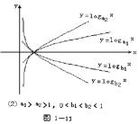
(1) a1>a2>1，0<b1<b2<1
【有理函数】
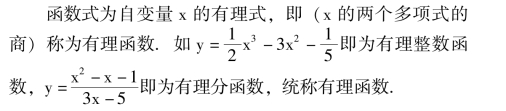
【复合函数】
若函数u ＝φ (x)，其定义域为M，函数的值域为N，又有函数y ＝f (u)，它的定义域是N，这样y 就通过变量u构成了x 的函数，记作y ＝f [φ (x)]，则称y 为x 的复合函数，u 叫做中间变量或中间函数.
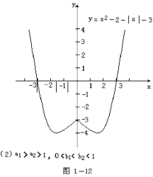
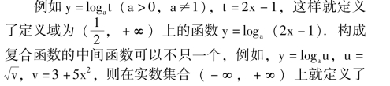
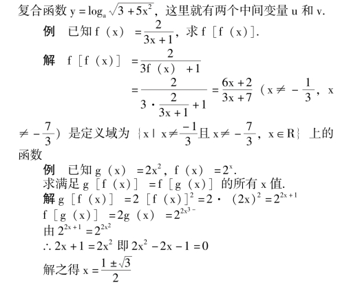
【基本初等函数】
幂函数、指数函数、对数函数、三角函数及反三角函数，称为五种基本初等函数，统称为“基本初等函数.”
【初等函数】
由基本初等函数经过有限次有理运算或复合，所得到的函数，统称为“初等函数”.